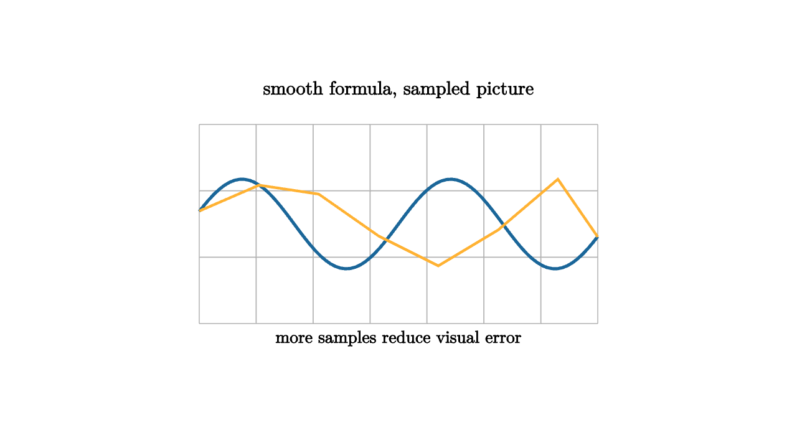

Computer graphics lives between continuous geometry and finite data. A curve may be defined by a smooth formula, but the screen sees sampled vertices and short segments. A surface may be described by a height function, but the GPU receives triangles. Learning graphics means learning where the continuous story is preserved, where it is approximated, and how to make that approximation honest.

source
let soft = |col, amount| lerp(WHITE, col, amount)
mesh scene = [
center{1.35u} Text("smooth formula, sampled picture", 0.68),
stroke{LIGHT_GRAY, 1} LineGrid([-2, 2, 8], [-1, 1, 4], 1),
stroke{BLUE, 3} ExplicitFunc(|x| 0.45 * sin(3 * x), [-2, 2, 80]),
stroke{ORANGE, 2.5} Polyline([2l + 0.13u, 1.4l + 0.39u, 0.8l + 0.3u, 0.2l + 0.12d, 0.4r + 0.42d, 1.0r + 0.06d, 1.6r + 0.45u, 2r + 0.13d]),
center{1.15d} Text("more samples reduce visual error", 0.62)
]Sampling is a contract. The mathematical curve promises values everywhere; the renderer promises to choose enough points that the line looks right at the intended scale. Zoom in far enough and the approximation becomes visible. This is not a failure of graphics. It is the central tradeoff.
Surfaces add another layer: normals. A triangle mesh has flat faces unless normals are interpolated or recomputed. Lighting depends on those normals, so two surfaces with the same vertices can feel different when shaded. In an applied geometry course, this is a good moment to connect derivatives to pixels. The tangent plane of a surface tells light how to bounce.
A parametric surface makes the same idea more explicit. We choose two parameters, often called $u$ and $v$, and map them into space:
Moving a little in the $u$ direction gives one tangent vector. Moving a little in the $v$ direction gives another. Their cross product gives a normal direction:
That normal is a lighting input. A calculus object becomes a visual decision.
source
let samples = 20
let height = |x, y| 0.35 * sin(4 * x) + 0.25 * cos(4 * y)
let color_at = |pos, idx| keyframe_lerp([0 -> BLUE, 0.5 -> GREEN, 1 -> ORANGE], 0.5 + height(pos[0], pos[1]))
"Flat Samples"
camera = Camera([3, -3, 2.0], [0, 0, 0], [0, 0, 1])
mesh grid = stroke{BLACK, 1.1} ColorGrid(|pos, idx| LIGHT_GRAY, [-1.4, 1.4, samples], [-1.0, 1.0, samples])
mesh title = center{1.35u} Text("a grid is a list of samples", 0.62)
play [Fade(0.7, [&grid]), Write(0.7, [&title])]
"Lift"
grid =
stroke{BLACK, 1.1}
point_map{|p| [p[0], p[1], height(p[0], p[1])]}
ColorGrid(color_at, [-1.4, 1.4, samples], [-1.0, 1.0, samples])
title = center{1.35u} Text("the height function lifts vertices", 0.62)
play [Trans(1.3, [&grid]), Trans(0.7, [&title])]
"Camera"
camera = Camera([2.3, -1.6, 1.4], [0, 0, 0.1], [0, 0, 1])
title = center{1.35u} Text("the camera chooses the evidence", 0.62)
play [CameraLerp(&camera, 1.5), Fade(0.8, [&title])]This is why graphics is a strong applied home for multivariable calculus. Partial derivatives become normals. Parametric curves become motion paths. Linear maps become camera transforms. Approximation error becomes something visible, not only a bound in a theorem.
The lesson to keep: graphics turns smooth ideas into finite meshes. Sampling chooses vertices, triangles choose local pieces, normals choose how light reads those pieces, and the camera chooses which evidence the viewer sees. The math remains continuous in spirit, while the machine works with a carefully chosen finite version.